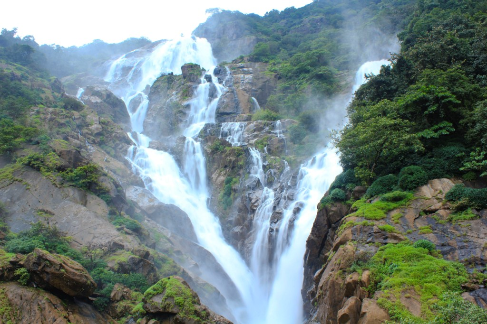
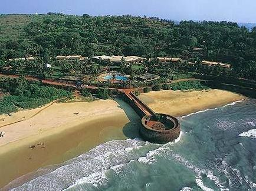
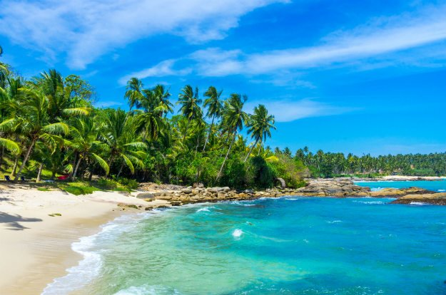

The majestic cascade of white water, gushing over the steep, nearly vertical face of the mountain from a spectacular height of 1017ft; is both breath taking and awe inspiring, making one aware that there are many forces in nature much more powerful that the human mind and body.
The name ‘Dudhsagar’ literally translates to ‘sea of milk’ which many believe is an allusion to the white spray and foam that the great waterfall creates as it cascades into the waters of the lake. The falls are at their zenith during the monsoon season, although they are a popular attraction all year round.


Overlooking the vast expanse of ‘seeming to be endless’ blue waters in front of it, Fort Aguada is one of the most popular tourist destinations of Goa. It receives a lot of tourist traffic all around the year. Reasons are that it’s excellent for sightseeing and also that it stands as a testimony to the glory of Portuguese empire.So this is one of oldest of its kinds in Asia as it was built in 1864. It is a four storeyed structure and when you take a view of the surrounding acreage from the lighthouse, it is just par amazing. For the ones who love to take photographs, this is a place for you to look out for beautiful scenes and clicking opportunities!
Calangute Beach is a perfect tourist retreat, filled with souvenir stalls, shacks and other stalls selling everything from beer, trinkets to pawns. All these simply add to the popularity of beach, making it a must-visit place. Huge showrooms with exquisite handicrafts from Tibet, Kasmir, Rajasthan, Indonesia and other striking places, queue the main road running towards Anjuna. The beach showcases a distinctive Goan beach culture and assures a splendid time with loved ones. So, if you want an unstrained solitude, plan for Calangute beach holidays as it's a perfect destination for nature freaks and the glorious view of locales enfolding serene ambiance, mark the place as a dream destination for beach bums.


The Saturday Night Market is located at Arpora in North Goa, 4.3 kilometers from Anjuna beach, and 3.7 kilometers from the Baga beach. The market is 17.7 kilometers north of Panaji. Also called Ingo’s Night Market, it is open between 4 PM and 11 PM from November to April. This is a great place not just for shopping, but also for feeling the Goa ambience. There are party zones for revelers. There is live music, bars, and restaurants serving organic salads, chocolate waffles, Greek food, and local delicacies. You can shop clothes, bags, spices, funky jewelry, handicrafts, leather accessories, shoes, exotic lamps, and more.
The night market at Arpora attracts a huge number of tourists – both Europeans and Indians. It is particularly popular with foreign tourists, and the hippie culture. You will find many stalls run by Europeans, making the ambience distinctively cosmopolitan. The nearby Mackies Saturday Night Bazaar beside the Baga River is much smaller in size and has less character.